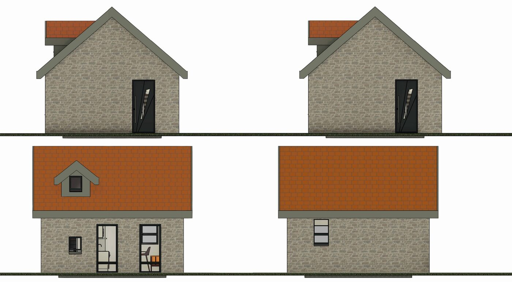
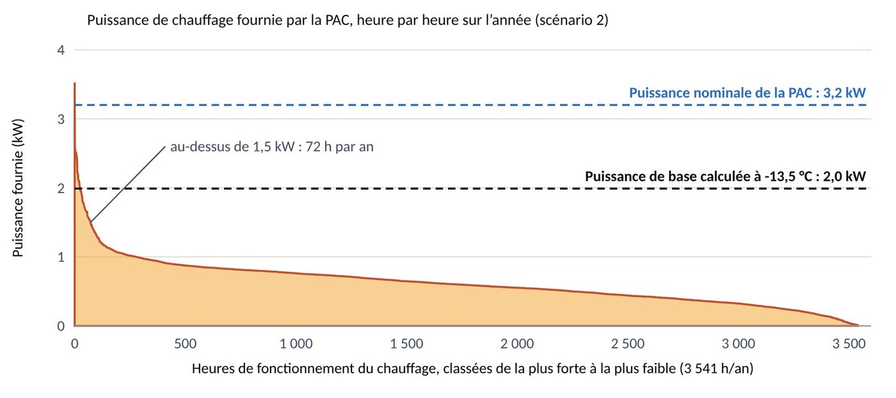
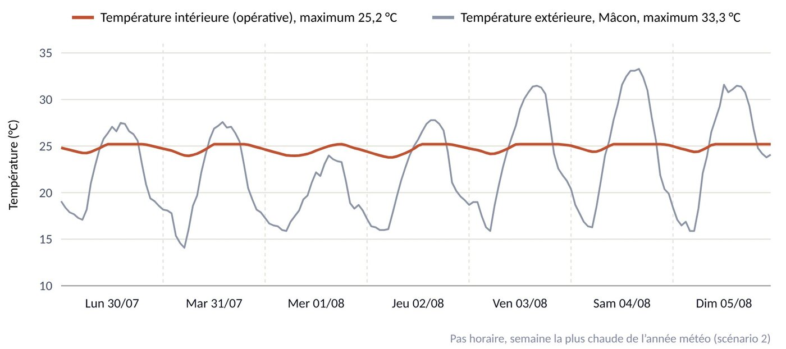

Un abri à rendre habitable
Murs en pierre de 50 cm, sol en terre-plein, ni isolation ni chauffage : tout est à créer. J'ai d'abord dessiné les plans, coupes et façades à partir des relevés et des souhaits des propriétaires, puis mené l'étude avec deux calculs complémentaires : une simulation thermique dynamique pour dimensionner et vérifier le confort d'été, et un calcul selon la méthode 3CL pour estimer la classe énergétique.

Une pompe à chaleur à la bonne taille
Une fois isolé, le logement ne demande que 1,9 à 2,0 kW par −13,5 °C. Une première piste, une pompe à chaleur intérieure, a été écartée après échange avec le support du fabricant (puissance minimale trop élevée, ballon tampon imposé, fin de série). Le choix s'est porté sur une pompe à chaleur air/eau bi-bloc de 3 kW, reliée à un plancher chauffant et rafraîchissant, et sur un chauffe-eau thermodynamique sur air extrait qui assure aussi la ventilation.
La simulation montre que la puissance fournie ne dépasse 1,5 kW que 72 heures par an : la machine travaille surtout à faible charge, et l'inertie de la dalle lisse son fonctionnement.

Deux façons d'isoler la pierre
| Scénario 1 : fibre de bois et frein-vapeur | Scénario 2 : chaux-chanvre et fibre de bois rigide | |
|---|---|---|
| Consommation estimée (3CL) | 93 kWhEP/m².an, classe B | 97 kWhEP/m².an, classe B |
| Électricité consommée (STD) | 1 190 kWh/an | 1 242 kWh/an |
| Température maximale en été (STD) | 27,2 °C | 26,3 °C |
| Fournitures estimées TTC | 16 200 à 23 000 € | 17 200 à 24 500 € |
Les deux scénarios atteignent la classe B avec plus de 30 points de marge. L'écart d'énergie est négligeable : le choix se fait sur le comportement du mur à l'humidité. J'ai recommandé le scénario 2, mur perspirant mieux adapté à la pierre ancienne, sous réserve d'une simulation hygrothermique.

Livrables : plans, rapport de 23 pages (dimensionnement, STD, calcul 3CL, solutions écartées, chiffrage des fournitures, démarches et prochaines étapes).
Étude réalisée par BETTHER, sur plans. Les classes indiquées sont des estimations et ne valent pas DPE. Maîtres d'ouvrage et adresse masqués.